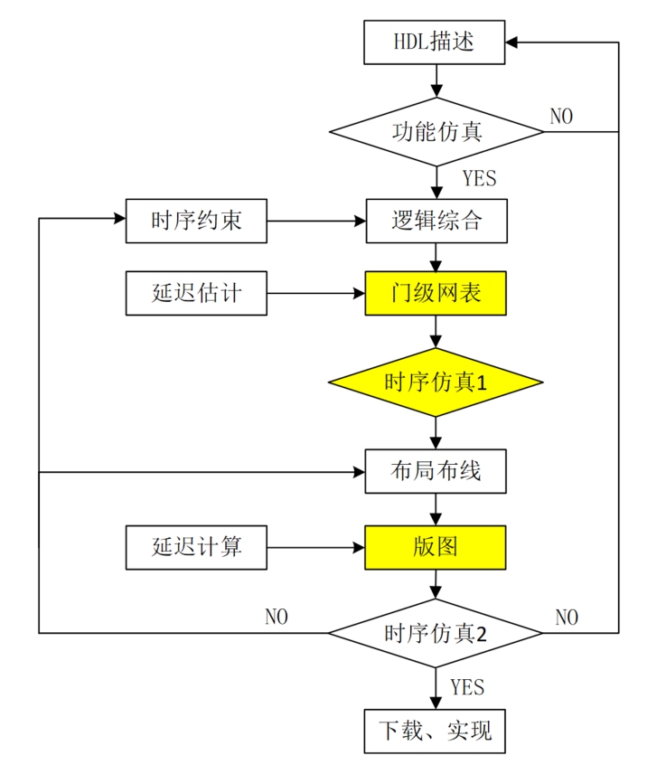
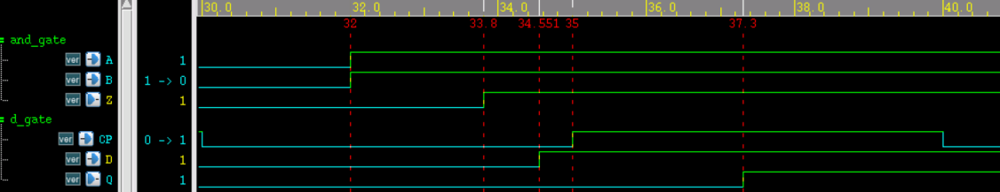

关键词： 延迟反标注， SDF
延迟反标注是设计者根据单元库工艺、门级网表、版图中的电容电阻等信息，借助数字设计工具将延迟信息标注到门级网表中的过程。利用延迟反标注后的网表，就可以进行精确的时序仿真，使仿真更接近实际工作的数字电路。
延迟反标注过程
前面教程中的仿真基本都是功能性的仿真。无论是进行 IC 设计还是 FPGA 开发，时序仿真都是必不可少的。《Verilog 教程》的《1.4 Verilog 设计方法》章节中也描述了完整的数字设计开发流程。
下面，说明延迟反标注在该流程中是怎么使用的，权当复习与巩固。
- (1) 利用硬件描述语言完成 RTL 层级的描述，进行功能仿真。
- (2) 对时钟、复位、输出端口等信号进行一定的时序约束，包括时钟频率、时序检查、延迟等信息的设置，并用于逻辑综合。
- (3) 综合出的门级网表包含各种粗略估计的延迟信息。此时可以进行去除掉 hold、recovery、 removal、interconnect（互联线）等延迟信息，进行初步的时序仿真和静态时序分析 (STA)，初步验证 setup 等时序是否满足时序要求。很多公司或个人也会将此步的仿真略过。
- (4) 对门级网表进行布局布线，转换为版图级网表。根据元器件几何形状和制造工艺等信息可以提取版图电路中的电容和电阻信息，再根据此信息就可以计算出版图中的延迟值。
- (5）将布局布线后版图中的延迟信息反标到版图级网表中，便可以精确的修改网表中的延迟值。此时再进行时序仿真和 STA，以验证时序是否满足。
- (6) 如果所有验证均通过，则可以进行下载或实现、生产。如果时序有 violation，首先需要检查时序约束设置，比如延迟参数、时钟频率、信号关系等设置是否有问题，再重新布局布线验证是否能消除 violation。如果上述措施均不能消除 violation，则需要回到设计初始，优化 RTL 的描述。
此过程示意图如下，标黄部分表示数字设计流程中可以增加的操作说明。

SDF 文件
SDF (Standard Delay Format)，标准延时格式文件，常用延迟反标注。该文件包含了仿真用到的所有 IOPATH，INTERCONNECT、TIMING CHECK 等延迟时间和时序约束的参数。下面就简单的介绍下 SDF 文件。
文件格式
SDF 文件用关键字 DELAYFILE 声明，并包含 DESIGN、DATE 等关键字信息。
延迟时间和时序约束参数均在 CELL 内说明。
SDF 文件就是由文件声明信息和很多个不同的 CELL 组成的，格式如下。
(DESIGN "top")
(DATE "Love Sep 7 11:11:11 2017")
......
(TIMESCALE 1ns)
(CELL
......
)
(CELL
......
)
......
)
延迟类型
SDF 文件中的延迟类型包括 cell delay 和 wire delay。cell delay 指逻辑门单元器件内部的延迟，wire delay 是指器件之间通过 wire 互联的延迟。
cell delay 描述如下，定义了 module "and_gate" 中输入端口（A/B）与输出端口（Z）的上升延迟和下降延迟，并指定了最小值和最大值。
(CELLTYPE "and_gate") //module 名字
(INSTANCE u_and) //例化名字，如果多层次访问需要指定访问层次
(DELAY
(ABSOLUTE
(IOPATH A Z (1.5::1.8) (1.3::1.7)) //上升延迟最小值1.5，最大值1.8
(IOPATH B Z (1.5::1.8) (1.3::1.7)) //下降延迟最小值1.3，最大值1.7
)
)
)
wire delay 描述如下，定义了在 module "top" 中，从 u_and 输出端到 u_dt 输入端的上升延迟和下降延迟，并指定了最小值和最大值。
一般 RTL 级仿真或综合出的门级网表是可以忽略 wire delay的，因为后端还需要重新布局布线。布局布线后的网表就接近真实的电路，此时就需要考虑 wire delay。
(CELLTYPE "top") //module 名字
(INSTANCE) //如果是顶层设计模块，可忽略例化名字
(DELAY
(ABSOLUTE
(INTERCONNECT u_and.Z u_dt.D (0.500::0.751) (0.400::0.551))
//(INTERCONNECT u_and/Z u_dt/D (0.500::0.751) (0.400::0.551))
//层次访问符号，有的编译器支持".",有的编译器支持"/"，这里需要注意
)
)
)
条件延迟及时序检查
CELL 中还可以用关键字 COND 指定条件延迟。
同时，也可以在 CELL 内做时序检查。
一个 D 触发器的延迟说明及时序检查举例如下。
(CELLTYPE "d_gate")
(INSTANCE u_dt)
(DELAY
(ABSOLUTE
// D=1时 上升延迟为1.3-2.3， 下降延迟为1.5-2.2
(COND D==1'b1 (IOPATH CP Q (1.3::2.3) (1.5::2.2)))
// D=0时 上升延迟为1.2-2.1， 下降延迟为1.4-2.0
//此处只是为了说明 COND 的用法，D=1时下降延迟参数不可能用到
// D=0时上升延迟参数也不可能用到
(COND D==1'b0 (IOPATH CP Q (1.2::2.1) (1.4::2.0)))
)
)
(TIMINGCHECK
(SETUP D (posedge CP) (0.8::1))
//setup check, D-CP 时间小于0.8或1时，便打印 violation
)
)
使用方法
Verilog 提供了系统函数 $sdf_annotate 去调用 SDF 文件完成延迟反标注的过程。
使用格式如下：
$sdf_annotate ('sdf_file'[, module_instance] [,'sdf_configfile'][,'sdf_logfile'][,'mtm_spec'] [,'scale_factors'][,'scale_type']);
这里，sdf_file 必须指定，其余参数可选。
这里只对前几个常用的参数进行说明。
- sdf_file: SDF 文件名字，包含路径信息。
- module_instance: 例化的设计模块名字，一般为 testbench 中所例化的数字设计模块名称，注意和 SDF 文件内容中的声明保持层次的一致。
- log_file: 编译时关于 SDF 的日志，方便查阅。
- mtm_spec: 指定使用的延迟类型，选项包括 MAXIMUM、MINIMUM、TYPICAL，分别表示使用 SDF 文件中标注的最大值、最小值或典型值。当然上述 SDF 文件例子中没有给出典型值。
使用 specify 仿真
下面使用 specify 进行简单的时序仿真，以便与使用 SDF 文件进行时序仿真做对比。
一个用 specify 指定延迟的与门逻辑描述如下：
output Z,
input A, B);
assign Z = A & B ;
specify
specparam t_rise = 1.3:1.5:1.7 ;
specparam t_fall = 1.1:1.3:1.6 ;
(A, B *> Z) = (t_rise, t_fall) ;
endspecify
endmodule
一个用 specify 指定延迟的 D 触发器描述如下：
实例
output Q ,
input D, CP);
reg Q_r ;
always @(posedge CP)
Q_r <= D ;
assign Q = Q_r ;
specify
if (D == 1'b1)
(posedge CP => (Q +: D)) = (1.3:1.5:1.7, 1.1:1.4:1.9) ;
if (D == 1'b0)
(posedge CP => (Q +: D)) = (1.2:1.4:1.6, 1.0:1.3:1.8) ;
$setup(D, posedge CP, 1);
endspecify
endmodule
顶层模块描述如下，主要功能是将与逻辑的输出结果输入到 D 触发器进行缓存。
实例
output and_out,
input in1, in2, clk);
wire res_tmp ;
and_gate u_and(res_tmp, in1, in2);
d_gate u_dt(and_out, res_tmp, clk);
endmodule
testbench 描述如下，仿真时设置 "+maxdelays"，使用最大延迟值。
实例
module test ;
wire and_out ;
reg in1, in2 ;
reg clk ;
initial begin
clk = 0 ;
forever begin
#(10/2) clk = ~clk ;
end
end
initial begin
in1 = 0 ; in2 = 0 ;
# 32 ;
in1 = 1 ; in2 = 1 ;
# 13 ;
in1 = 1 ; in2 = 0 ;
end
top u_top(
.and_out (and_out),
.in1 (in1),
.in2 (in2),
.clk (clk));
initial begin
forever begin
#100;
if ($time >= 1000) $finish ;
end
end
endmodule // test
仿真时序如下所示，由图可知：
- (1) 与门输入端 A/B 到输出端 Z 的上升延迟为 33.7-32=1.7ns；
- (2) 与门输出端 Z 到触发器输入端 D 的互联延迟为 0；
- (3) 触发器 D 端到 CP 端时间差为 35-33.7=1.3ns，大于 setup check 时设置的 1ns，因此时序满足要求，不存在 violation 。
- (4) 触发器 CP 端到输出端 Q 的上升延迟为 36.7-35=1.7ns；
综上所述，仿真结果符合设计参数。

使用 SDF 仿真
保持关于 SDF 文件的例子中涉及的参数不变，将多个 CELL 说明整合成完整的 SDF 文件，命名为"simple_test.sdf"。
在 testbench 中加入以下语句，将 SDF 文件中的延迟信息反标注到设计的模块 top 中，重新进行时序上的仿真。
$sdf_annotate("../rtl/simple_test.sdf", u_top, , "sdf.log", "MAXIMUM", ,);
end
仿真时序及 log 打印信息如下，由图可知：
- (1) 与门输入端 A/B 到输出端 Z 的上升延迟为 33.8-32=1.8ns；
- (2) 与门输出端 Z 到触发器输入端 D 的互联延迟为 34.551-33.8= 0.751ns，不再为 0；
- (3) 触发器 D 端到 CP 端时间差为 35-34.551=0.449ns，小于 setup check 时设置的 1ns，因此时序不满足要求，会打印存在 violation 的信息。
- (4) 触发器 CP 端到输出端 Q 的上升延迟为 37.3-35=2.3ns；
综上所述，仿真结果符合设计参数，但是时序存在 violation。主要原因是因为与门输入端的数据和触发器时钟是异步不相关的。为解决此类异步问题，请参考下一章节《4 章：同步与异步》。


需要说明的是：
与 specify 块语句相比，SDF 文件还可以指定模块间 wire delay。
一般来说，使用 SDF 文件指定版图级的网表 timing 信息最接近实际数字电路，相比 rtl 或综合出的门级网表，此版本的 timing 是最差的。
SDF 文件指定模块内路径延迟时，原模块的 specify 块必须保留，且 specify 块与 SDF 文件中指定的延迟的条件、类型等均需一致，延迟值可以不同。例如在 specify 块中无条件指定延迟：
(A => Z) = (1.3, 1.7) ;
在 SDF 文件中指定条件延迟：
(COND A==1'b1&&B==1'b1 (IOPATH A Z (1.5::1.8) (1.3::1.7)))
则在编译阶段就会报告"IOPATH from A to Z is not found."的 SDF Warning。SDF 文件设置的延迟是无效的。此处 SDF 文件也应该使用无条件的方法指定路径延迟。
本次只是为了介绍 SDF 文件及其用法而手动编写的 SDF 文件。实际上 SDF 文件都是由设计人员借助 IC 设计工具（例如 PrimeTime）生成的，上一条注意事项也无需太过担心，调试时注意就好。一般数字设计的门级网表数量巨大，人为写 SDF 文件也不切实际。

点我分享笔记